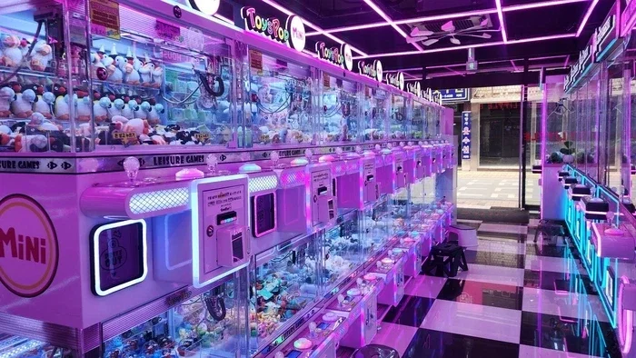
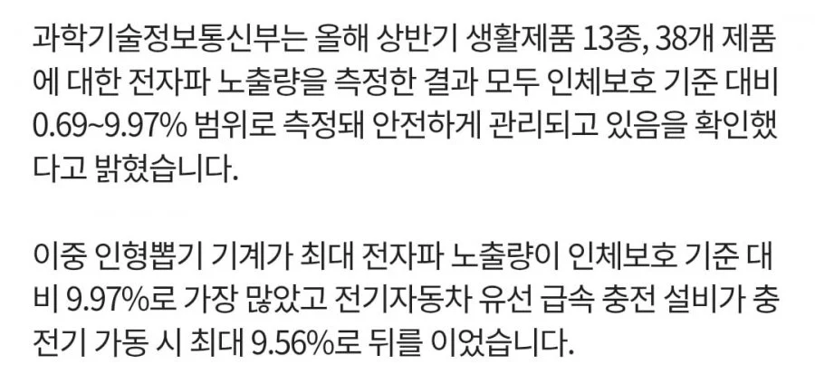

모니터는 전자파 심하지 않아 큰 문제 되지 않음
전자레인지는
차폐막이 있기 때문에 인체에 미치는 영향이 미미함


전기자동차 유선 급속 충전 설비보다 높은 뽑기방이 최고임
모니터는 전자파 심하지 않아 큰 문제 되지 않음
전자레인지는
차폐막이 있기 때문에 인체에 미치는 영향이 미미함


전기자동차 유선 급속 충전 설비보다 높은 뽑기방이 최고임
배달배 ㅋㅋ
눈아파서 힘듦
인형뽑기는 뭔원리로 전자파가 스쿠터에 재밍걸릴정도로 뿜어나오는거?
https://health.chosun.com/site/data/html_dir/2024/07/05/2024070502079.html
인형뽑기가 전자기기 중 전자파를 가장 많이 발생한다고는 하는데, 그렇다 해도 기준치의 10% 이하 수준임. 다른 기기에 비해 높을 뿐 사람에게 위험한 수준까진 아님.
근데 여러대잖아
여러대라고 해도, 전자파 세기는 거리가 2배 멀어질수록 1/4로 약해지기 때문에 기기에서 2~3미터 이상만 벗어나도 전자파 영향은 없다시피 함. 게다가 전자파 영향이 가장 강한건 정면에 있을 때라 비스듬한 각도로 옆에 붙어있는 다른 인형뽑기 기계의 전자파는 많이 줄어들음. 인형뽑기 기계를 한 사람에게 전부 정면을 향하도록 둥글게 둘러놓는다면 전자파가 가장 강하겠지만 보통 그런식으로 배치되어있지는 않잖음? 물론 막 인형뽑기 가게에 한시간 이상 오래 머물고 그러면 몸에 그다지 좋지는 않겠지만 보통 10~20분 내외로 뽑기 하고 가는게 전부니까.
스쿠터 재밍도 인형뽑기의 전자파 주파수 대역이 스마트키에 간섭해서 그런거지 뭐 EMP처럼 재밍을 해서 맛이가는게 아님.
이 댓글이 100프로 맞다고 가정하면, 인형뽑기 좀 빡세게 하는 사람들한텐 유의미하게 안좋을수도 있겠는데…?
별 문제 없음 그냥해도 됨
와 씨 뽑기할때 집게 각 보겠다고 뽑기 유리에 대가리 처박고 뽑기하는데 좆돼따
애초에 기기 하나에서 나는 전자파가 기준치의 10% 이하인데다 그 기준치라는게 넘는다고 바로 이상생기는 수치인것도 아니라서, 저정도 수치면 뽑기 좀 한다고 몸에 문제생길것도 없음.
휴 진짜 스쿠터 신호 안걸려서 끌고내려가는 스팟도 있음
https://www.youtube.com/shorts/aa4ZqKJrAUk?feature=share 이거 보면 ㄹㅇ 전자파 땜인건가??
전자기파가 발생하는 발생원에 몸 비비고 사는거 아님 그냥 걱정할 필요없음....
어떤사람은 공유기 전자파 해롭다고
이상한 은박지 안테나 커버 씌우고 인터넷 안된다 ㅇㅈㄹ하던데
ㅋ
저런거 너무 신경안써도됨. 지금 주머니에 넣고다니는 스마트폰도 기지국이랑 거리가 멀어지면 송신전력을 높이는데 이미 붕알에 몇년간 실컷 노출하고 사는중
최고는 전기장판 아니냐
햇빛 쨍쨍한 대낮에 밖에 걸어다니는게 전자파 제일많이 맞는다
유튜브에 뽑기방 앞에서
배달오토바이 시동 안걸리는 영상있더라
썸타던 여자애가 7천원 가량 하는 인형을 3만원 들여서 뽑는거 보고 왜그렇게까지 하냐고 물어봤더니
뽑을때 도파민이 터진다고
그래 열심히 뽑아라 하고 손절했음
뽑기방 요새 ㅈㄴ 안뽑히던데
외제차 잔뜩 있는 주차장에서도 딸배 스쿠터 시동 안걸림. 그냥 좀 심하긴해도 극단적으로 위험한건 아니라 보면 될듯?
갑자기 뽑기방이 위험하게 느껴짐?
길에서 길빵하는 새끼가 내뿜는 담배연기 흡입이랑
너가 좋아하는 삼겹살집에서 고기굽는 연기 흡입이 훨씬 훨씬 더 안 좋음 그러니 들갑 ㄴ
전자파 차단 스티커 하나면 해결 가능
어른은 괜찮아도 전자파로인해서 신생아나 어린아이들 은 영향이 있으려나
버거킹 KFC같은 곳에서 프라이어 기계가 전자파 심한거같더라. 스마트폰 시간이 이상하게 어긋나있고 그랬음. 거기 그만두니까 어느순간 시간이 저절로 맞춰졌는데 우연인지 진짠지는 모르겠..
그건 전파방해땜에 인터넷에서 시간 못 맞춘거 아니냐, 내장 rtc도 몇초씩 틀어지고 그럴거고
근데 튀김기계에서 전파방해 작용이 실제로 일어나?
전자파 대역이 LTE나 5G 대역이면 전파방해가 될 수 있지
저거 뽑기방 앞에서 스쿠터 키 인식 못해서 시동 안걸리는 영상 있었는데 ㅋㅋㅋㅋㅋ